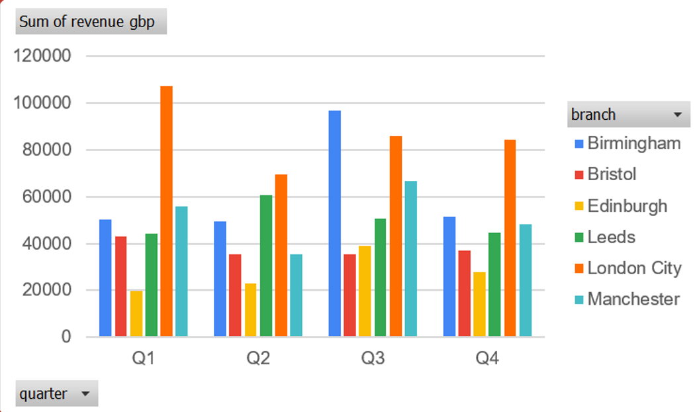
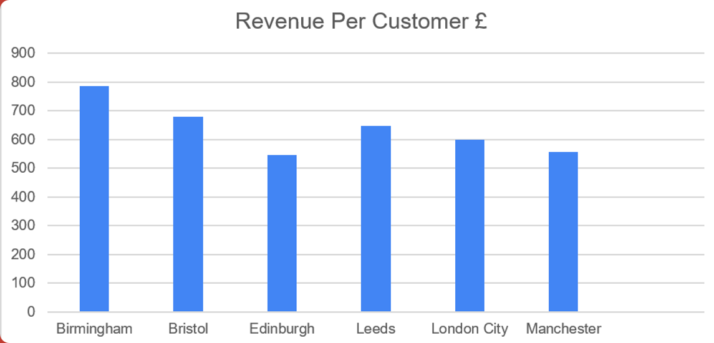

NorthBridge Bank is a retail bank with six UK branches. The brief was to analyse a year of customer revenue data and present findings to the Head of Retail Banking before a board meeting. The exercise ran under timed conditions: one hour to turn a messy spreadsheet into a finished presentation for a panel of industry volunteers. I worked in a team of four and took the revenue strand. This covered performance by quarter and by branch and became slide three of the deck and the first of our three recommendations.
The deadline shaped every decision. We had sixty minutes to clean the data, analyse it, build slides and rehearse. There was no time to explore the dataset as a group before dividing the work, so we assigned strands in the first few minutes: revenue, churn and satisfaction, and data quality. We then worked in parallel based on a quick read of the columns, not a detailed plan. Splitting that early was risky. Four people working alone for an hour can easily produce analyses that contradict each other or overlap.
Continuous status reporting prevented that. Formal check-ins would have cost time we did not have. I called out each transition as it happened: cleaning started, cleaning finished, pivots built, charts added to the deck, and recommendation drafted. This meant the others knew when the numbers they might need were ready, and when the deck would take my slide. It sounds trivial, but there was no slack in the schedule. If someone had waited silently for an input, or if two of us had cleaned the same column, the time lost would have been unrecoverable.
The extract contained 2,000 customer records across six branches, but it was not analysis ready. Branch names and quarter labels were inconsistent. The same location or period appeared under several spellings, which would have split results across multiple pivot rows. Some fields were missing outright. A subset of revenue values had also been recorded in euros rather than pounds. That was the most dangerous error because euro figures did not look obviously wrong in a column of numbers. They simply made every total containing them quietly incorrect. I had to standardise the labels, resolve the gaps and convert the currency to one basis before any figure could be trusted.
With a clean base, I built two pivot tables. One showed revenue by quarter, broken down by branch. The other compared total revenue with customer count by branch, which let me calculate revenue per customer. Total revenue shows which branch is the biggest. Revenue per customer shows which branch is performing best on a like-for-like basis, so the network cannot be compared fairly on totals alone. Both pivots were charted and added straight to the deck.
London City leads on total revenue, but not on customer value. London City generated £347,100 of the £1,263,135 annual total, 27.5% of the book and comfortably the largest branch. On revenue per customer, it ranks fourth of six at £599, behind Birmingham, Bristol and Leeds. Its lead comes from volume: 579 customers, nearly twice any other branch.

Q3 was the strongest quarter, not the summer dip we might have expected. Q3 delivered £374,884 against £273,910 in Q2, an uplift of 37%, with Q1 at £320,942 and Q4 at £293,399.
Edinburgh has the lowest revenue per customer, though only just. Edinburgh sits at the bottom at £546, but Manchester is £556, effectively a tie for last place. Both are around £240 per customer behind Birmingham at £785. The gap that matters is not Edinburgh against Manchester but the bottom two against the top.
Mortgages drive branch revenue. Mortgage records make up 15.4% of the dataset but 68.2% of all revenue. They average £2,789, compared with £13 for a current account. Branch mortgage share correlates with revenue per customer at 0.855. Birmingham and Bristol have the strongest customer value and the highest mortgage shares, at 18.0% and 18.5%. Edinburgh and Manchester have the weakest customer value and the lowest mortgage shares, at 13.4% and 12.1%.
The Q3 peak is the finding I would treat most carefully. Almost all of the quarterly uplift came from Birmingham. The branch recorded £96,879 in Q3, compared with roughly £50,000 in each of the other three quarters. Looking underneath that, Birmingham wrote 17 mortgages in Q3 against 13 or 14 in every other quarter, so the volume barely moved. What changed was size. Four of the five largest single records in the entire dataset are Birmingham mortgages booked in Q3, the biggest of them £14,607.
A headline such as "Q3 was our strongest quarter, up 37%" is technically accurate. It is also incomplete. The increase came from a handful of unusually large mortgage completions at one branch, not from a broad improvement in trading. Both interpretations use the same numbers, but only one would survive a board member asking what changed. Mortgages carry around two hundred times the revenue of a current account, so a few records dominate any total in this dataset. That makes a quarter-on-quarter narrative built on totals alone fragile. Under time pressure, it is tempting to put the biggest number on the slide. The more useful instinct is to ask what the total is made of before calling it a trend.
My recommendation, the first of the three we presented, was to raise revenue per customer at Edinburgh by cross-selling additional products to the existing customer base rather than chasing new customers. Edinburgh's problem is not the size of its book, but what each relationship is worth, and acquisition would be the more expensive way to fix that.
With more time, I would make the recommendation more specific. Not all cross-sell is equal. Closing a £240 per-customer gap through credit cards, which average £106, or savings accounts at £37, would require too many additional products per customer. Mortgages at £2,789 and personal loans at £1,044 are the only products with enough value to move the number. Edinburgh also has the second-lowest mortgage share in the network. The recommendation is sound, but it would be stronger if it named those two products and explained why they should lead.
Technically, this was a cleaning and aggregation exercise. I standardised inconsistent categorical data, resolved a mixed-currency revenue column, and built pivot tables and charts that turned 2,000 rows into two clear comparisons. A non-specialist could read both in seconds. Deriving revenue per customer, rather than reporting totals, was the decision that made the branch analysis meaningful.
The larger lesson was about working under a real deadline. An hour removes the option of doing the analysis first and deciding how to present it later. The output has to be in mind while the data is still being cleaned. Communication also becomes a deliverable in its own right. When four people are working separately against a shared clock, a short update on progress is often more useful than a longer explanation of findings. It lets everyone else plan around you. That is the habit I took away, and it transfers directly to a working environment where nobody has time to ask.